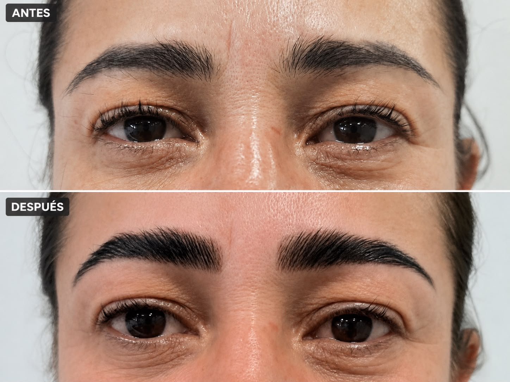

Diseño de mirada · estudio en Granollers
Cejas para el Vallès Oriental
Diseño, Natural Brow™, laminado o lifting de cejas, tinte y micropigmentación según el pelo, la piel y el mantenimiento que deseas. Atendemos en Granollers con cita previa.
Valorar mis cejas
No todas las cejas necesitan micropigmentación.
Una ceja con pelo suficiente puede mejorar con diseño, depilación, laminado o tinte. Cuando existen zonas con poca densidad, asimetrías o se busca una definición más duradera, valoramos micropigmentación y Powder Brows.
Natural Brow™ combina diseño, laminado y tinte sobre el pelo existente, sin micropigmentación. El microblading y el nanoblading son opciones de micropigmentación que se valoran por separado según piel, pelo y trabajos anteriores. El objetivo es conservar tu expresión y trabajar con la forma real de la ceja, no imponer una plantilla.
Qué cita de cejas elegir antes de desplazarte
| Qué quieres cambiar | Servicio y alcance | Precio y tiempo de cita |
|---|---|---|
| Limpiar el contorno | Diseño y depilación. Define forma y retira vello; no necesitas añadir laminado ni pigmentación. | Confirma modalidad, presupuesto y tiempo antes de reservar. |
| Ordenar el pelo y definir el tono | Natural Brow: diseño, laminado y tinte. Trabaja el pelo existente, sin micropigmentación. | 55 € · aproximadamente 1 hora. |
| Aportar solo color | Tinte de cejas. Compara esta opción si no necesitas cambiar la dirección del pelo. | Consulta la tarifa y el alcance del tinte elegido en su ficha. |
| Completar visualmente zonas o dibujar trazos | Microblading, nanoblading o micropigmentación. Requiere valorar piel, pelo y trabajos anteriores. | Nanoblading: 297 €; microblading: 350 €. Repaso no incluido. Tiempo de cita a confirmar. |
La hora de Natural Brow es la duración aproximada de la sesión, no del resultado. La valoración permite confirmar la adecuación del servicio; todos se realizan en Granollers. Si ya sabes que buscas laminado, consulta su ficha específica en lugar de reservar micropigmentación.
Organiza tu visita a Granollers.
La cita se realiza en Avinguda Sant Esteve, 40, 08402 Granollers, no en una sede distinta de tu municipio. Si vienes desde el entorno de Mollet, Parets y Montmeló, desde Cardedeu y Llinars o desde Sant Celoni, confirma primero el servicio y el tiempo de cita; después calcula la ruta según el transporte y la hora de salida que elijas.
Antes de desplazarte puedes enviar una foto actual sin filtro. Te orientaremos sobre qué opciones merece la pena comparar, aunque la valoración definitiva se realiza presencialmente. Si se propone micropigmentación, pregunta también cómo se organizará el seguimiento.
¿Laminado, tinte o micropigmentación?
Cuéntanos qué te molesta de tus cejas y cuánto mantenimiento quieres asumir. No recomendaremos un tratamiento más intenso si una opción sencilla puede resolverlo.
Consultar mi casoPreguntas sobre cejas en Vallès Oriental
¿Lifting y laminado de cejas son lo mismo?
Lifting de cejas es una búsqueda habitual para referirse al laminado, que orienta y ordena temporalmente el pelo existente.
¿Qué diferencia hay entre tinte y micropigmentación?
El tinte es temporal. La micropigmentación deposita pigmento de forma superficial para definir visualmente la ceja.
¿Dónde se realizan los tratamientos?
En Nohuska Beauty Lab, Avinguda Sant Esteve, 40, 08402 Granollers.
¿Atendéis a toda la comarca?
Si te desplazas desde otro municipio del Vallès Oriental, consulta disponibilidad antes de organizar la visita. Todos los tratamientos se realizan en el estudio de Granollers.
Información de cada opción
Una consulta por WhatsApp no confirma una reserva. Acordaremos contigo el tratamiento, la fecha y la hora.
Empieza por una valoración honesta.
Diseño de cejas personalizado en Granollers.
Consultar por WhatsApp